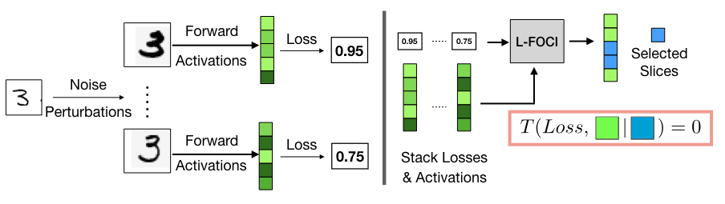

Deep Unlearning via Randomized Conditionally Independent Hessians
CVPR 2022
Ronak Mehta, Sourav Pal, Sathya Ravi, Vikas Singh
Abstract
Recent legislation has led to interest in machine unlearning, i.e., removing specific training samples from a predictive model as if they never existed in the training dataset. Unlearning may also be required due to corrupted/adversarial data or simply a user’s updated privacy requirement. For models which require no training (k-NN), simply deleting the closest original sample can be effective. But this idea is inapplicable to models which learn richer representations. Recent ideas leveraging optimization-based updates scale poorly with the model dimension d, due to inverting the Hessian of the loss function. We use a variant of a new conditional independence coefficient, L-CODEC, to identify a subset of the model parameters with the most semantic overlap on an individual sample level. Our approach completely avoids the need to invert a (possibly) huge matrix. By utilizing a Markov blanket selection common in the literature, we premise that L-CODEC is also suitable for deep unlearning, as well as other applications in vision. Compared to alternatives, L-CODEC makes approximate unlearning possible in settings that would otherwise be infeasible, including vision models used for face recognition, person re-identification and NLP models that may require unlearning data identified for exclusion.
Acknowledgements
This work was supported by NIH grants RF1AG059312, RF1AG062336 and RF1AG059869, NSF award CCF 1918211 and funds from the American Family Insurance Data Science Institute at UW-Madison. Sathya Ravi was supported by UIC-ICR start-up funds.
Reference
CVF Proceedings Landing Page
@InProceedings{Mehta_2022_CVPR,
author = {Mehta, Ronak and Pal, Sourav and Singh, Vikas and Ravi, Sathya N.},
title = {Deep Unlearning via Randomized Conditionally Independent Hessians},
booktitle = {Proceedings of the IEEE/CVF Conference on Computer Vision and Pattern Recognition (CVPR)},
month = {June},
year = {2022},
pages = {10422-10431}
}